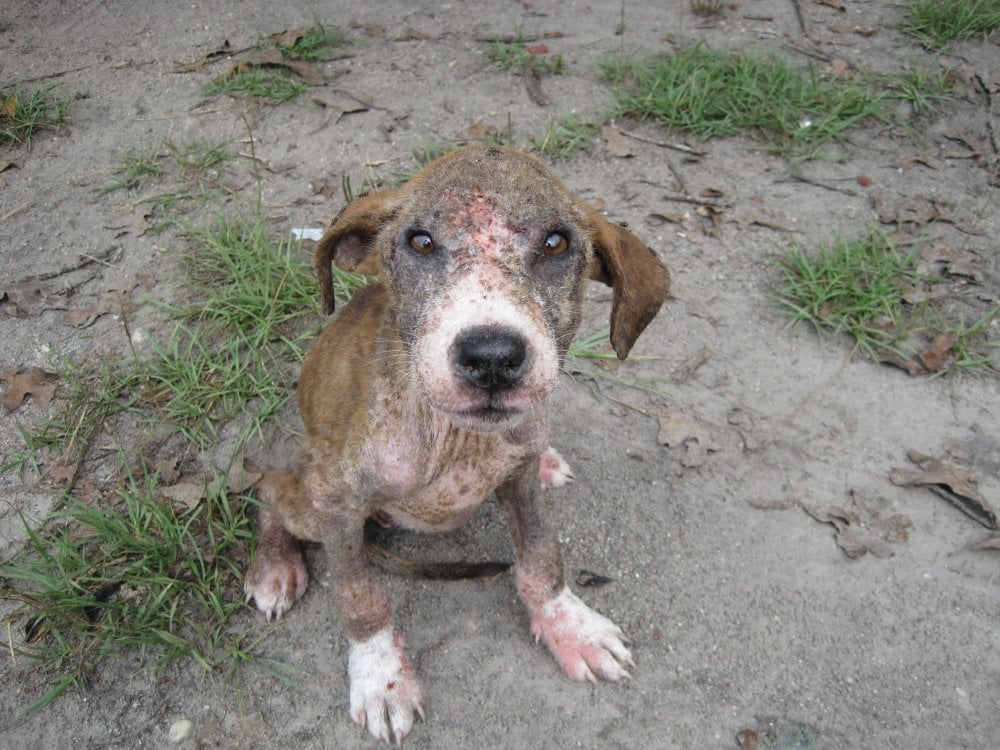

- Be a responsible pet owner. Know about and fulfil the needs of your pet. Don’t just concern yourself with basic needs – give your pet positive experiences that really enhance its well-being.
- Be an example of kindness to other pets. Foster a pet that has suffered abandonment. Sadly, many pets are relinquished to shelters for various reasons. Foster homes help these animals to recover and prepare them to move onto a new permanent loving home.
- Intervene if you witness animal cruelty, abuse or neglect. Do what you can to stop someone from mistreating an animal. However, be sensible and don’t put yourself in danger. If necessary, seek help from other witnesses.
- Report animal cruelty, abuse or neglect. If you witness any form of animal cruelty, report it to the police or other authorities. Act immediately to prevent further cruelty.
- Teach your children to have respect for animals. Set a good example by being respectful towards animals. Show children how to treat animals with love and consideration. Help them to grow up to become the next generation of advocates for animals.
- Demand stricter laws for the protection of animals. Stronger animal welfare laws and harsher penalties will lead to fewer cruelty cases.
- Shelter an animal in need. You can be the helping hand that an animal need. An animal that has been mistreated needs support, sometimes immediately. You can make a real difference by taking an animal out of a harmful situation.
- Consider that neglect of animals can be closely linked to domestic violence. Animal abuse and domestic abuse are often closely connected. By reporting your suspicions, you may also be helping both the animal in need and the family concerned. See also “The link between cruelty to animals and violence to humans”.
- Educate people around you about the issue. Help people to understand that they can intervene in situations where animals are being neglected or even tormented. Animals have a right to live without fear or pain, and we have a responsibility to step in if their rights aren’t respected.
- Offer help to people who are overwhelmed with their animal. Animals aren’t necessarily neglected out of a lack of love. An owner may not have the psychological resources to provide an animal with the appropriate care. Whatever the reasons may be, an affected pet must be removed from a place of neglect and given the care it needs to live and thrive. Any help you give to an animal may help a human too.